In this tutorial I demonstrate how to utilize object pooling in Unity 5 using C#. If you have not heard of object pooling or are unclear about what it is, simply put: object pooling is creating objects that will be kept ready for on demand use and hidden rather than destroyed when not being used. This significantly improves performance when used on objects such as bullets that are often numerous and used frequently. This is because continually creating and destroying objects becomes CPU intensive quickly and even more so when done in rapid succession. Let’s look at an example of three scripts that implement object pooling on a bullet.
This script will create and hold the pool for objects to be stored. It will also be referenced frequently by other scripts in the game. To allow other scripts to easily reference it declare a variable of ObjectPool that is public and static like so: 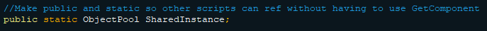 Then initialize the variable SharedInstance in the Awake function like so: 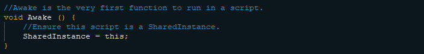 Awake is called when the script instance is being loaded making it the first script to run and is typically used to initialize variables or the game state before the game starts. (Awake Documentation)
Now that the script can be referenced easily by other scripts let’s declare a list that will hold the objects we wish to pool, the object to be pooled, and the amount to pool. Similar to the SharedInstance declare the List like so: 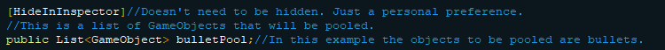
HideInInspector is completely optional and does as the name implies. I like to include it as I do not want the List editable from the Inspector. Next we will need the object that will be pooled. 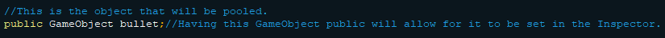
The variable is set to be public so I can easily drag and drop the object I want to use into the Inspector defining the variable. Lastly let’s set the amount of objects we want to pool. 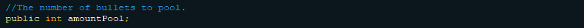
This variable is also kept public so it can be defined in the Inspector. With all the variables we will need declared we can move onto populating the List.In the Start function (Start Documentation) the first thing we want to do is initialize the List. Afterwards we can use a for loop Instantiate the object to be added into the List and then add it in. We will also need to set the object to be inactive. This ensures that the object is hidden and not interacting with anything else in the game. 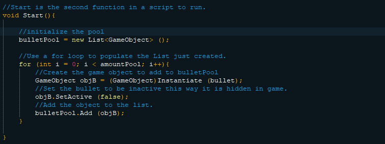
The for loop will run the number of times specified in the variable amountPool. Now that the list is populated we need to setup a function that will return one of the objects in the list when it is needed. The function will need to be public as it will be called by other scripts. It also needs to return a pooled object that is not currently in use. Thankfully this is easily done like so: 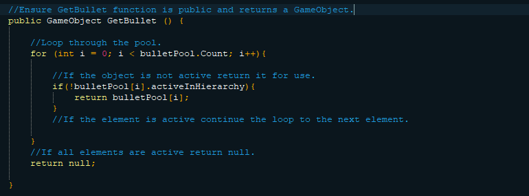
Here a for loop is used to traverse through the list and the first object it finds that is not active will be returned. If all objects are active then null will be returned. This presents a problem. If null is returned then our player will be shooting blanks. Let’s make a function the player can call in the case null is returned.
This function will need to be public and return an object just like the GetBullet function. However it will not need to traverse through the list to find an inactive object to return. Instead we will instantiate another object, set it to be inactive, add it to the pool, and return it to the player like so: 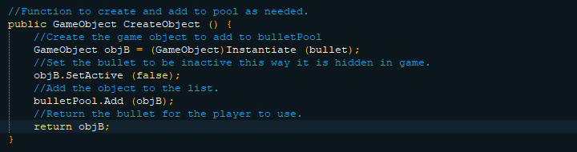
Calling of this function will be handled in the script that is requesting an object from the pool. With that we can move onto the second script we will be using. 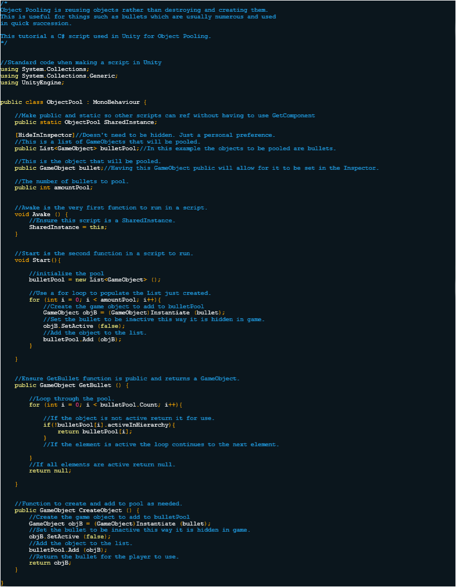While any script can call our ObjectPool script to request an object from the pool in this example I am using a player as the one requesting. I also left out script handling player movement only focusing on the calling functions in the ObjectPool script to get an object from the pool. First, let’s declare variables we will need. Fortunately, a transform (Transform Documentation) defining where the object will be placed when called will be the only variable needed. 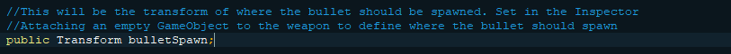
In this example an empty object is created in the Hierarchy and attached to the player weapon. The empty object is the dragged into the inspector to set the bulletSpawn variable. The reason I have the empty object be the transform is because as the gun moves the empty object will always be in the same position relative to the weapon.
Next we need to create the function that will be called when the player fires their weapon. The function will need to retrieve a bullet from the pool, change its position and rotation, and set it to be active. If null was returned instead of a bullet then the function CreateObject that was set up in the ObjectPool script needs to be called and the returned bullet prepped. This function is a little lengthy so instead of a small snippet please look at the image of the script provided. While it may look intimidating the function simply retrieves a bullet, modifies, its transform, and sets it to be active. 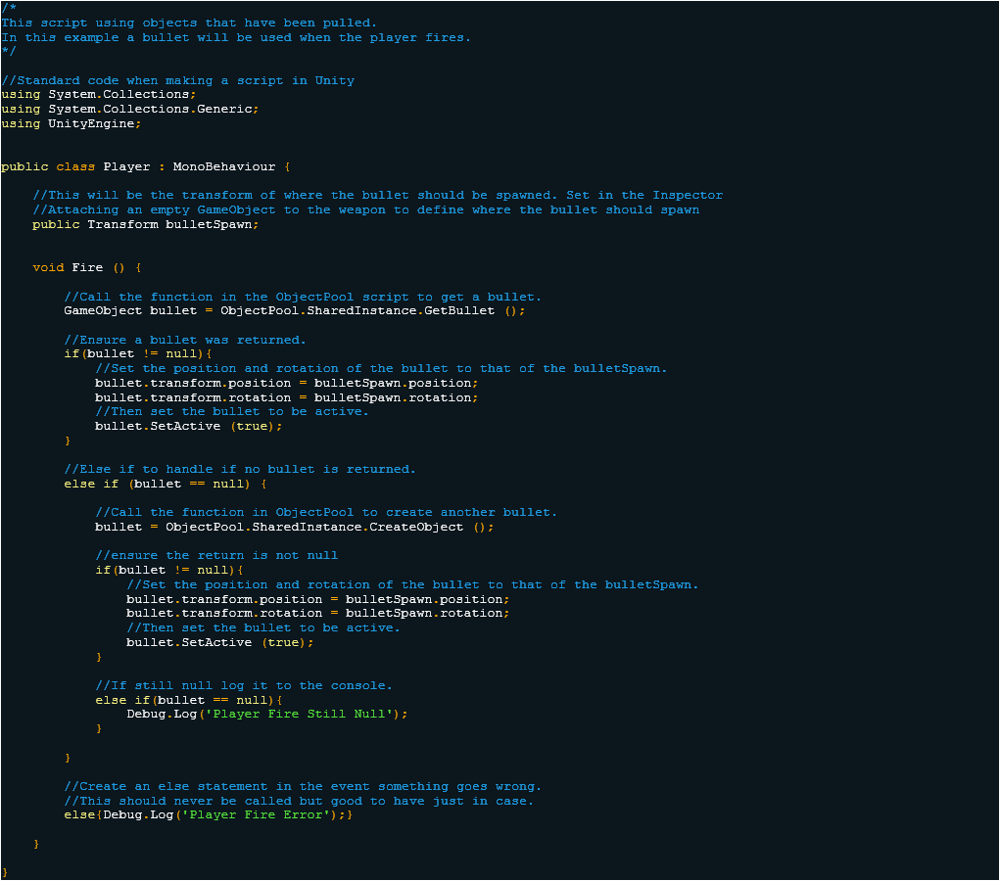
While that concludes the necessary script for object pooling functionality I thought I would go ahead and show the script for the bullet. I find that it helps to demonstrate something to keep in mind when pooling objects. For example, when using a rigid body the bullet its velocity needs to be set when it is enabled and set back to 0 when disabled. (OnEnable Documentation) (OnDisable Documentation) 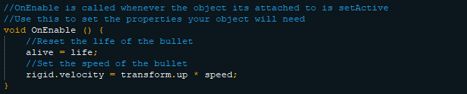 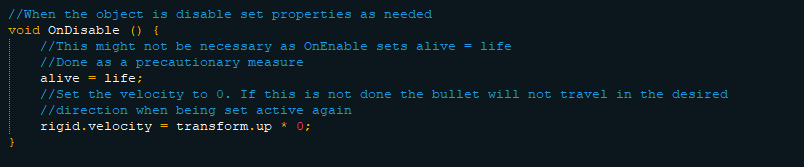 It is very important to set the velocity to 0 when disabling the bullet. If it will maintain the velocity from prior use and travel in an unattended direction. It’s important to be mindful of things like this as variables to not reset when an object is disabled. 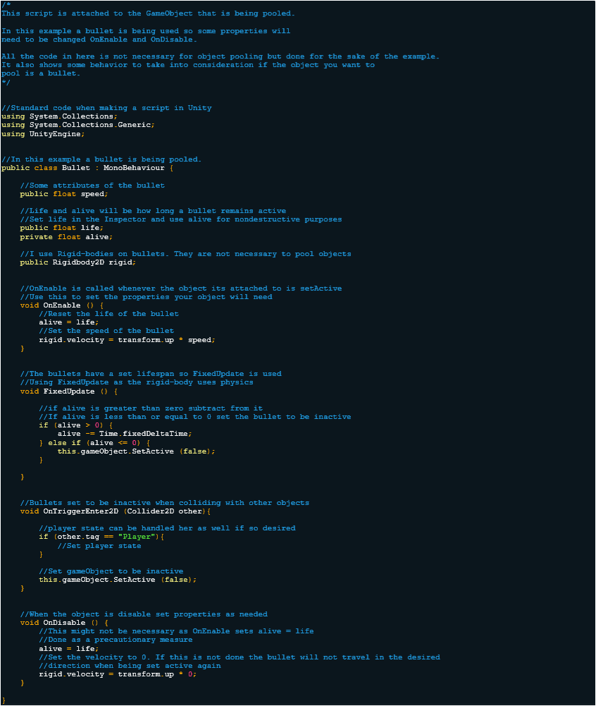
I hope that you found this tutorial useful and will use it in your own work. I plan to make more tutorials in the future so please check back every once in a while.